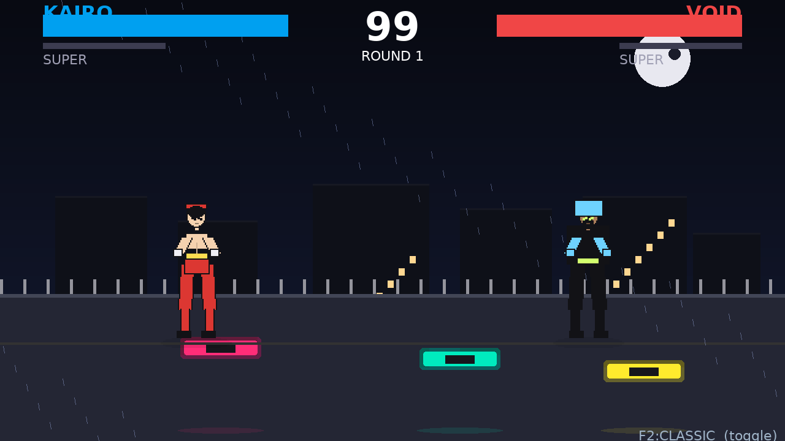
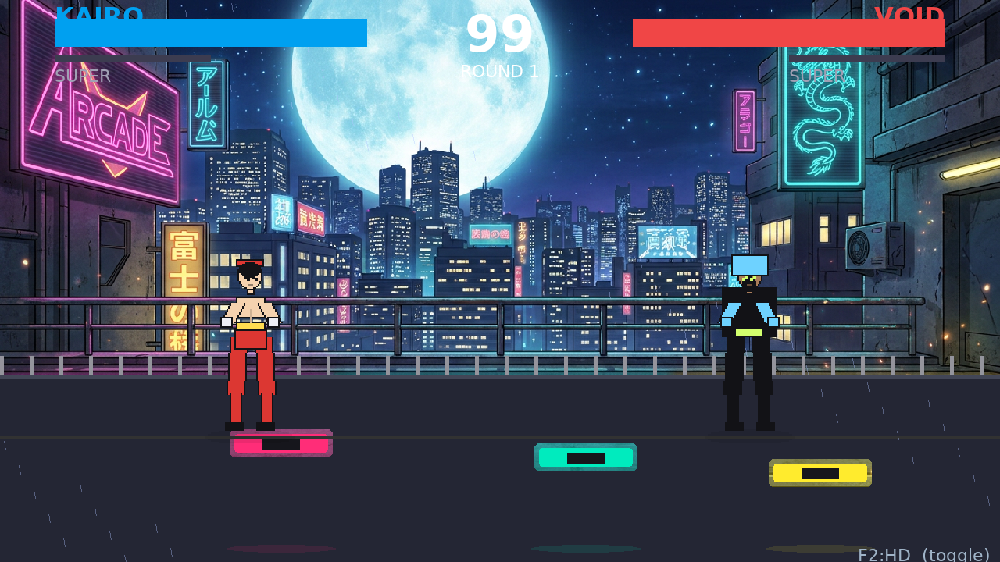
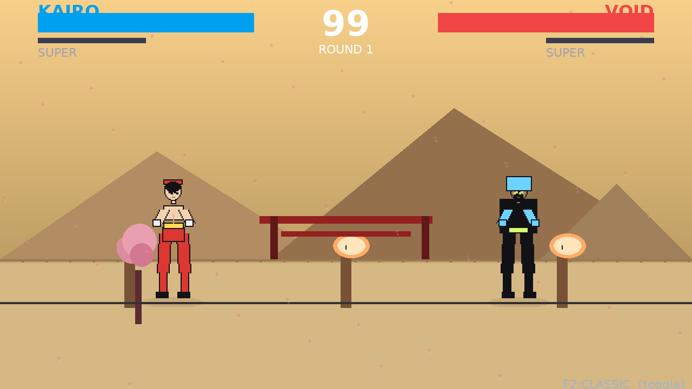
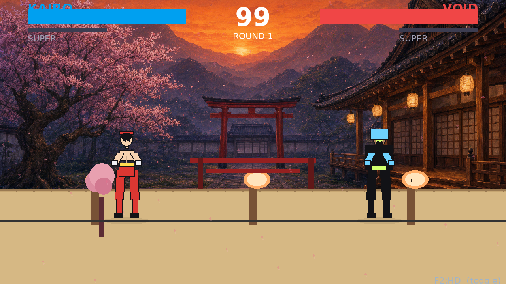
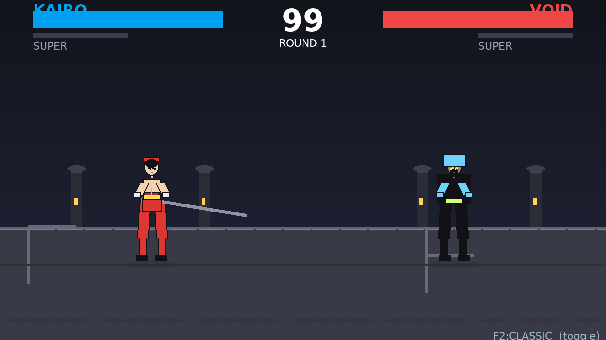
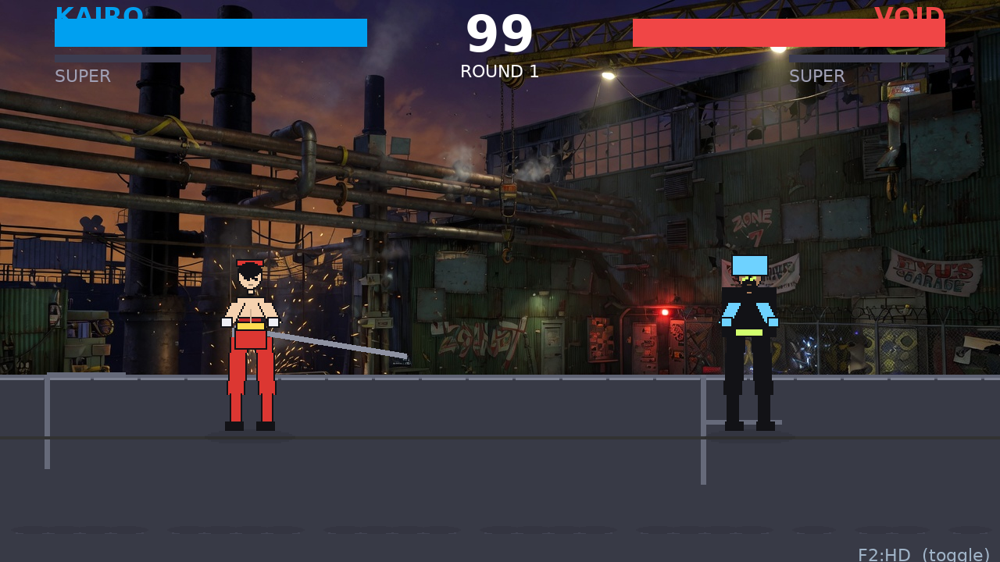
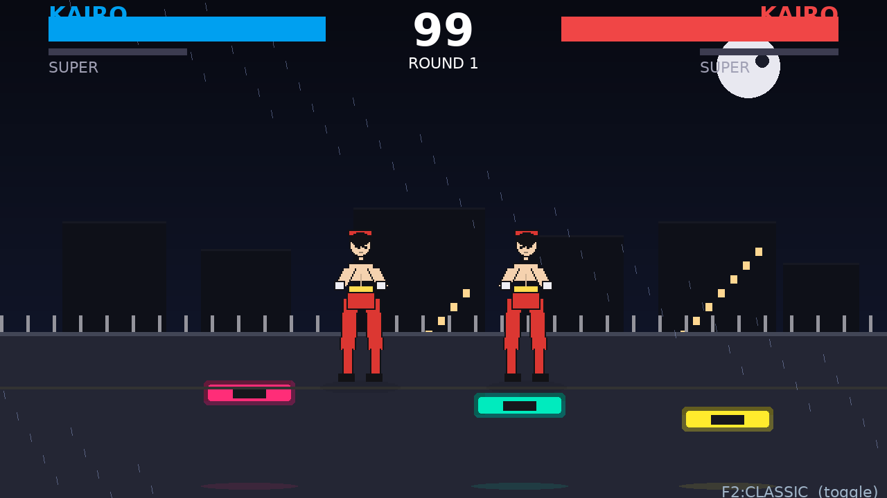
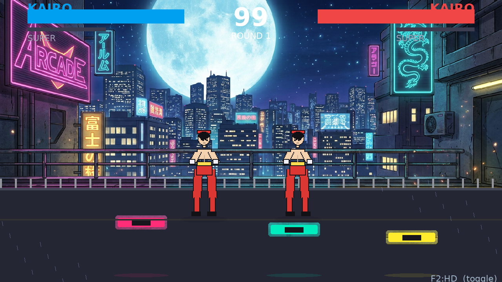
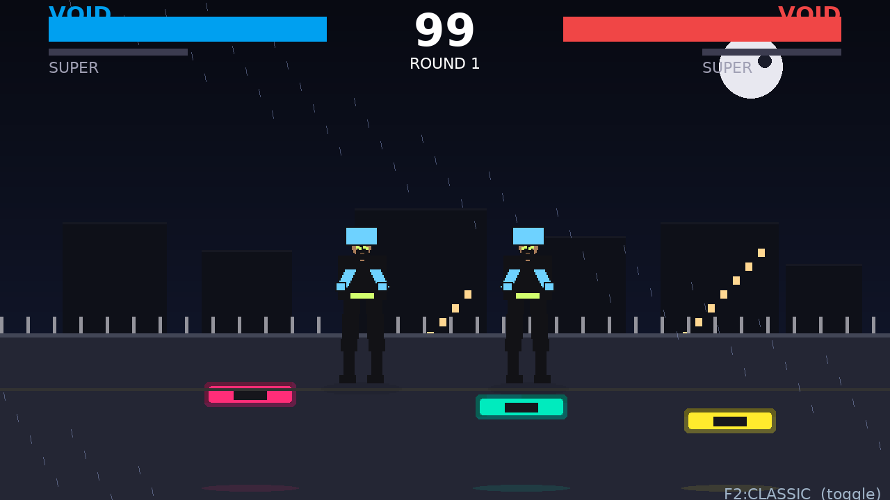
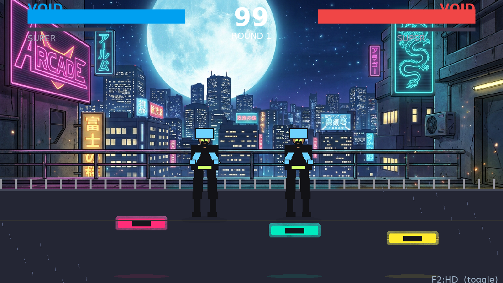
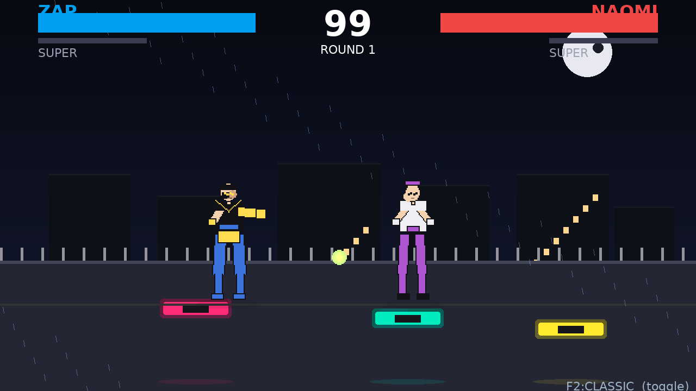
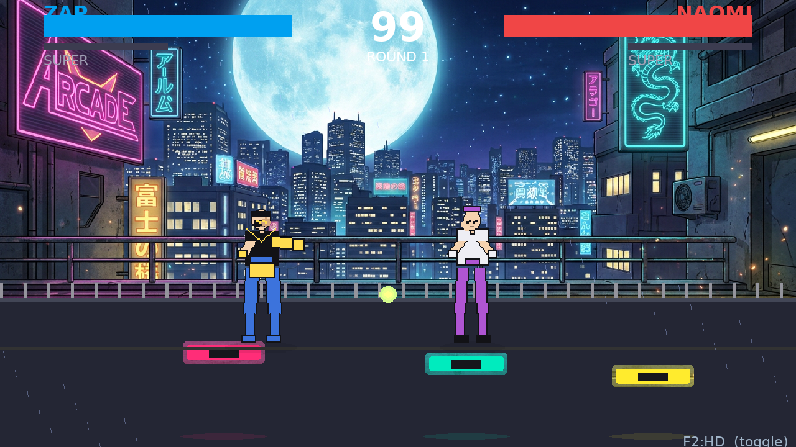
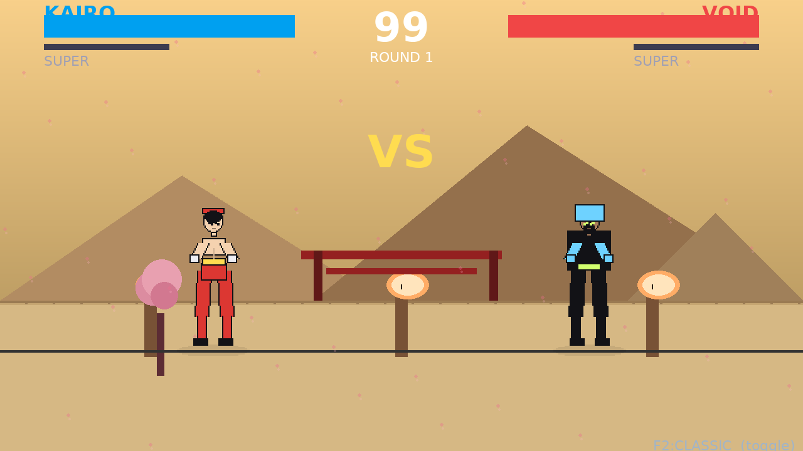
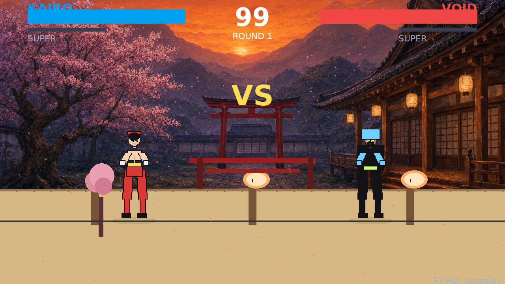
Press F2 in-game to switch instantly (character select or fight). CLASSIC = fully procedural (no copyright), HD = AI-generated stage backgrounds + portraits (same fighters, but now big, outlined, shaded — no head gap). Build ships both sets in assets/ + assets_hd/.














Next step (your call): replace the fighter sprites too with AI HD sheets (96 sprites). Right now only stages+portraits are AI; bodies are procedural V2 (much improved vs before, but still not SF2). Say "do fighters" and I will generate 6×12 HD fighter sheets and wire F2 to swap those too.